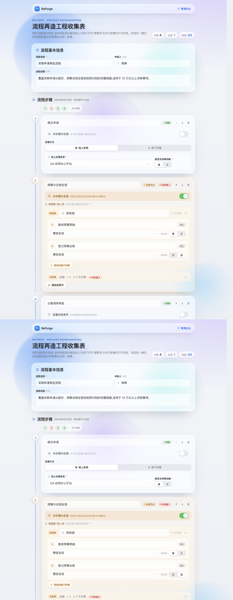
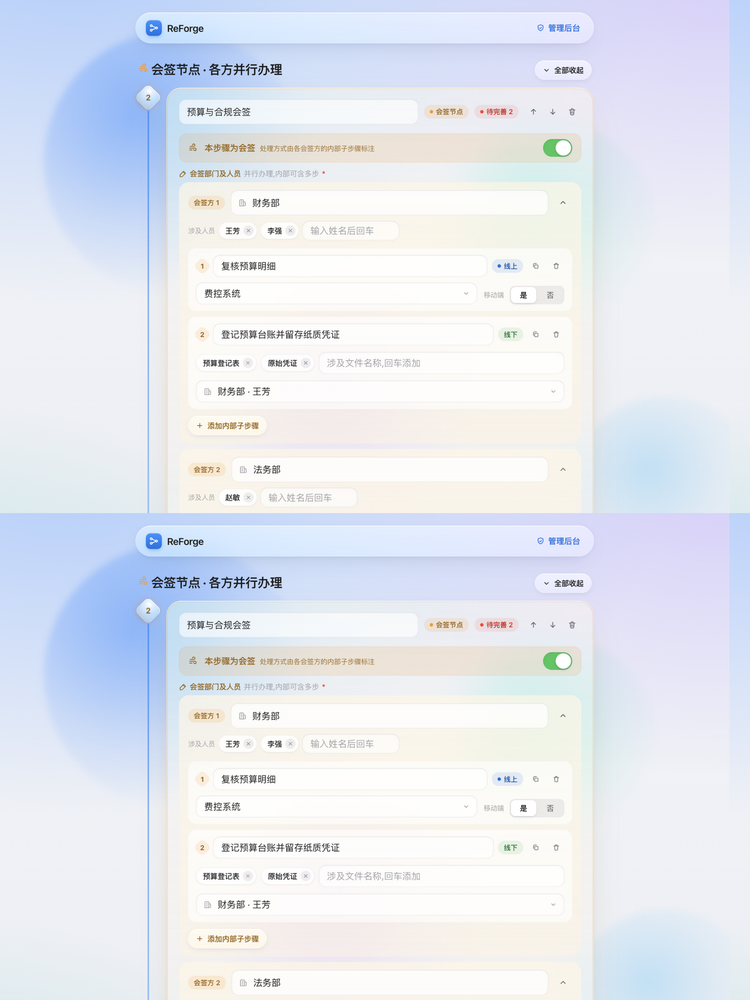
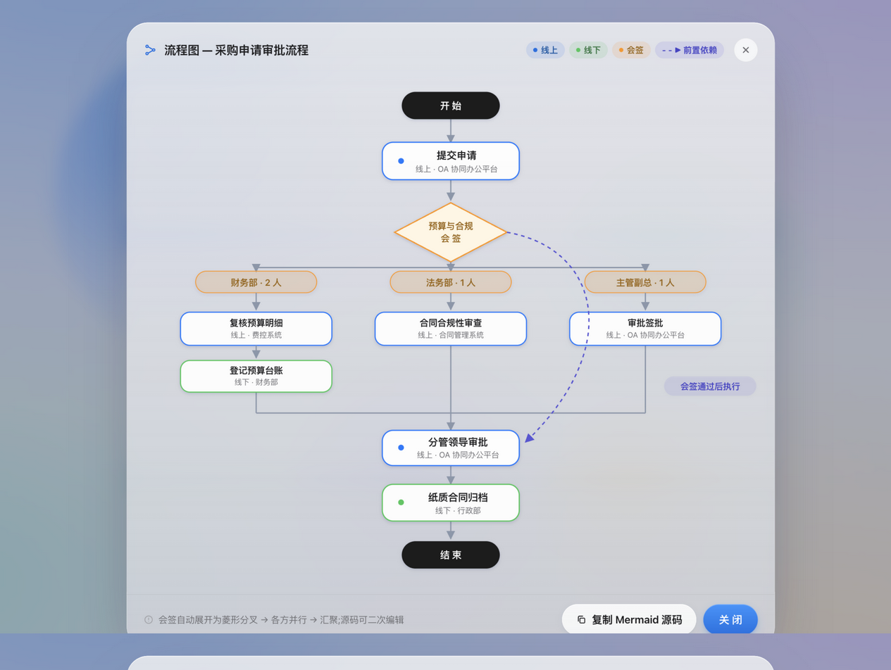
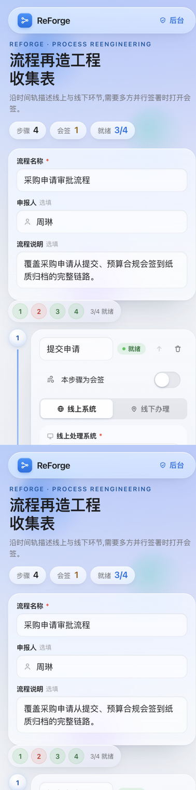
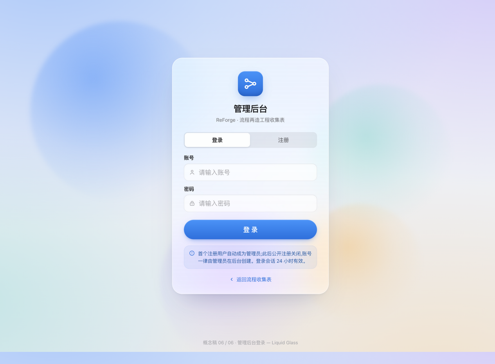

ReForge · Liquid Glass
高保真概念稿 · 6 屏 · Apple HIG
Concept · High-Fidelity Mockups
液态玻璃重设计 · 效果图总览
亮色极光壁纸上悬浮 Regular / Clear 两级玻璃材质;iOS 字阶与控件规格;签名元素「玻璃时间轨」——普通步骤为玻璃圆珠、会签为琥珀菱形。点击任一屏进入可交互预览。

F1跟进看板 + 指派改造跟进

F2跟进详情阶段 + 动态

F3流程图编辑器画布 + 检查器

F4监控大屏 · 一期三个核心数

F5监控大屏 · 完整P3 全维度

01首页 / 流程编辑器桌面 1440

02会签编辑器展开态

03流程图弹窗Sheet

04移动端393 × 852

05管理后台流程管理

06后台登录玻璃卡片
设计系统速览
- 材质
- Regular 玻璃(卡片):白 60%→38% + blur(28px) saturate(200%) + 镜面高光边 + 深柔影;Clear 玻璃(顶栏/Dock):白 50%→36% + blur(22px)
- 色彩
- 操作蓝 #0071E3 · 会签琥珀 #FF9500 · 就绪绿 #34C759 · 依赖靛 #5856D6 · 缺失红 #FF3B30(Apple 系统色)
- 字体
- SF Pro + PingFang SC(系统栈);iOS 字阶:大标题 34 / Title2 22 / 正文 17 / 脚注 13;表格数字
- 控件
- iOS 分段控件(处理方式/是/否)、开关(会签)、44pt 输入、胶囊主按钮、分组列表行、44pt 触摸目标
- 签名元素
- 玻璃时间轨:步骤序号 = 轨道玻璃珠,会签 = 琥珀玻璃菱形;移动端底部悬浮玻璃操作 Dock
- 语义延续
- 沿用现行图例:蓝 = 线上、绿 = 线下、琥珀 = 会签、虚线箭头 = 前置依赖